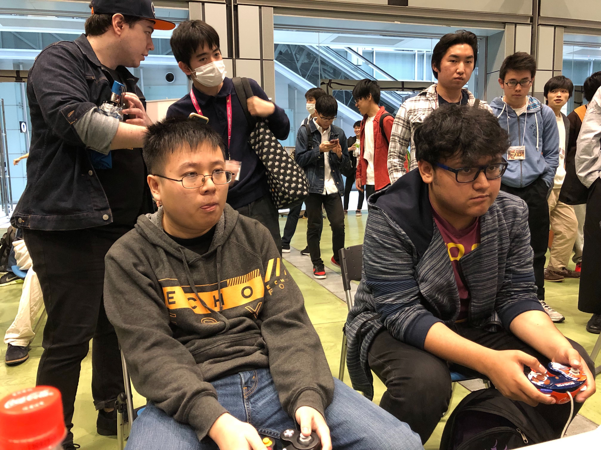
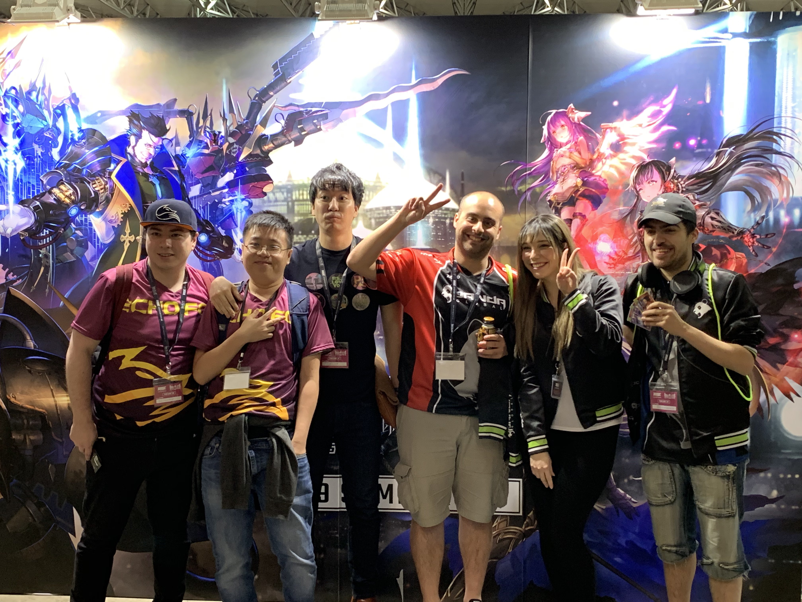

I am Arthur Lee, a former professional gamer, who turned into a student for Epicodus! I traveled the world playing video games for 2 years of my life and lived my childhood dream. During that time I started coding as well and realized I enjoyed it! I coded a lot on my free time wanted to learn more. So then, I retired from professional gaming to study at Epicodus hoping to make it into a career!
I graduated from Clark College with a associate's degree to then persue Professional gaming. I saw a huge opportunity to make it a career and lucky enough for me, I did it for 2 years of my life. It was a real dream come true, to travel the world, play video games all day and get paid for doing it. During some free time I learned about coding. I had a lot of friends who had a career doing it and slowly realized that it was extremely fun and challenging. I started coding every week and I instantly fell in love. The more I did, the more I realized that I needed some help and a lot of it, so, I decided to join a coding camp and ended up here at Epicodus!
I have a lot of hobbies but most of them just involve playing and competing in every game I play. I hosted tournaments with over 100 partipcants, I actively manage communities and I play a large varity of games such as:
Thats me! This photo was taken when I got my first ever car!
This is me playing the best Super Smash Bros player in the world MK Leo!
This photo was taken in Japan with some of my friends I made while competing!